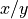

management_modules package¶
Data management¶
data_handling module¶
Managing data and data handling
-
cwatm.management_modules.data_handling.cbinding(inBinding)[source]¶ Check if variable in settings file has a counterpart in the source code
- Parameters
inBinding – parameter in settings file
-
cwatm.management_modules.data_handling.checkMeteo_Wordclim(meteodata, wordclimdata)[source]¶ reads the map attributes of meteo dataset and wordclima dataset and compare if it has the same map extend
- Parameters
nmeteodata – name of the meteo netcdf file
wordlclimdata – cname of the wordlclim netcdf file
- Returns
True if meteo and wordclim has the same mapextend
:raises if map extend is different
management_modules.messages.CWATMFileError()
-
cwatm.management_modules.data_handling.checkOption(inBinding)[source]¶ Check if option in settings file has a counterpart in the source code
- Parameters
inBinding – parameter in settings file
-
cwatm.management_modules.data_handling.checkOptionOptinal(inBinding)[source]¶ Test if parameter is a boolean and return an error message if not, and the boolean if everything is ok
- Parameters
inBinding – parameter in settings file
- Returns
boolean of inBinding
-
cwatm.management_modules.data_handling.compressArray(map, name='None', zeros=0.0)[source]¶ Compress 2D array with missing values to 1D array without missing values
- Parameters
map – in map
name – filename of the map
zeros – add zeros (default= 0) if values of map are to big or too small
- Returns
Compressed 1D array
-
cwatm.management_modules.data_handling.decompress(map, pcmap)[source]¶ Decompress 1D array without missing values to 2D array with missing values
- Parameters
map – numpy 1D array as input
pcmap – if True map is used as .map format
- Returns
2D array for displaying
-
cwatm.management_modules.data_handling.divideValues(x, y, default=0.0)[source]¶ returns the result of a division that possibly involves a zero
- Parameters
x –
y – divisor
default – return value if y =0
- Returns
result of  or default if y = 0
-
cwatm.management_modules.data_handling.getmeta(key, varname, alternative)[source]¶ get the meta data information for the netcdf output from the global variable metaNetcdfVar
- Parameters
key – key
varname – variable name eg self.var.Precipitation
- Returns
metadata information
-
cwatm.management_modules.data_handling.loadmap(name, lddflag=False, compress=True, local=False, cut=True)[source]¶ load a static map either value or pc raster map or netcdf
- Parameters
name – name of map
lddflag – if True the map is used as a ldd map
compress – if True the return map will be compressed
local – if True the map is local and will be not cut
cut – if True the map will be not cut
- Returns
1D numpy array of map
-
cwatm.management_modules.data_handling.loadsetclone(name)[source]¶ load the maskmap and set as clone
- Parameters
name – name of mask map, can be a file or - row col cellsize xupleft yupleft -
- Returns
new mask map
-
cwatm.management_modules.data_handling.mapattrNetCDF(name, check=True)[source]¶ get the 4 corners of a netcdf map to cut the map defines the rectangular of the mask map inside the netcdf map calls function
management_modules.data_handling.readCoord()- Parameters
name – name of the netcdf file
check – checking if netcdffile exists
- Returns
cut1,cut2,cut3,cut4
- Raises
if cell size is different –
management_modules.messages.CWATMError()
-
cwatm.management_modules.data_handling.mapattrNetCDFMeteo(name, check=True, add1=True)[source]¶ get the map attributes like col, row etc from a netcdf map and define the rectangular of the mask map inside the netcdf map calls function
management_modules.data_handling.readCoordNetCDF()- Parameters
name – name of the netcdf file
check – checking if netcdffile exists
- Returns
cut0,cut1,cut2,cut3,cut4,cut5,cut6,cut7
-
cwatm.management_modules.data_handling.mapattrTiff(nf2)[source]¶ map attributes of a geotiff file
- Parameters
nf2 –
- Returns
cut0,cut1,cut2,cut3
-
cwatm.management_modules.data_handling.maskfrompoint(mask2D, xleft, yup)[source]¶ load a static map either value or pc raster map or netcdf
- Parameters
mask2D – 2D array of new mask
xleft – left lon coordinate
yup – upper lat coordinate
- Returns
new mask map
-
cwatm.management_modules.data_handling.metaNetCDF()[source]¶ get the map metadata from precipitation netcdf maps
-
cwatm.management_modules.data_handling.multinetdf(meteomaps, startcheck='dateBegin')[source]¶ - Parameters
meteomaps – list of meteomaps to define start and end time
startcheck – date of beginning simulation
- Returns
- Raises
if no map stack in meteo map folder –
management_modules.messages.CWATMFileError()
-
cwatm.management_modules.data_handling.readCoord(name)[source]¶ get the meta data information for the netcdf output from the global variable metaNetcdfVar
- Parameters
name – name of the netcdf file
- Returns
latitude, longitude, cell size, inverse cell size
-
cwatm.management_modules.data_handling.readCoordNetCDF(name, check=True)[source]¶ reads the map attributes col, row etc from a netcdf map
- Parameters
name – name of the netcdf file
check – checking if netcdffile exists
- Returns
latitude, longitude, cell size, inverse cell size
- Raises
if no netcdf map can be found –
management_modules.messages.CWATMFileError()
-
cwatm.management_modules.data_handling.readmeteodata(name, date, value='None', addZeros=False, zeros=0.0, mapsscale=True, modflowSteady=False)[source]¶ load stack of maps 1 at each timestamp in netcdf format
- Parameters
name – file name
date –
value – if set the name of the parameter is defined
addZeros –
zeros – default value
mapsscale – if meteo maps have the same extend as the other spatial static m
- Returns
Compressed 1D array of meteo data
- Raises
if data is wrong –
management_modules.messages.CWATMError()if meteo netcdf file cannot be opened –
management_modules.messages.CWATMFileError()
-
cwatm.management_modules.data_handling.readnetcdf2(namebinding, date, useDaily='daily', value='None', addZeros=False, cut=True, zeros=0.0, meteo=False, usefilename=False, compress=True)[source]¶ load stack of maps 1 at each timestamp in netcdf format
- Parameters
namebinding – file name in settings file
date –
useDaily – if True daily values are used
value – if set the name of the parameter is defined
addZeros –
cut – if True the map is clipped to mask map
zeros – default value
meteo – if map are meteo maps
usefilename – if True filename is given False: filename is in settings file
compress – True - compress data to 1D
- Returns
Compressed 1D array of netcdf stored data
- Raises
if netcdf file cannot be opened –
management_modules.messages.CWATMFileError()if netcdf file is not of the size of mask map –
management_modules.messages.CWATMWarning()
-
cwatm.management_modules.data_handling.readnetcdfInitial(name, value, default=0.0)[source]¶ load initial condition from netcdf format
- Parameters
name – file name
value – netcdf variable name
default – (optional) if no variable is found a warning is given and value is set to default
- Returns
Compressed 1D array of netcdf stored data
- Raises
if netcdf file is not of the size of mask map –
management_modules.messages.CWATMError()if varibale name is not included in the netcdf file –
management_modules.messages.CWATMWarning()
-
cwatm.management_modules.data_handling.readnetcdfWithoutTime(name, value='None')[source]¶ load maps in netcdf format (has no time format)
- Parameters
namebinding – file name in settings file
value – (optional) netcdf variable name. If not given -> last variable is taken
- Returns
Compressed 1D array of netcdf stored data
-
cwatm.management_modules.data_handling.report(name, valueIn, compr=True)[source]¶ For debugging: Save the 2D array as .map or .tif
- Parameters
name – Filename of the map
valueIn – 1D or 2D array in
compr – (optional) array is 1D (default) or 2D
- Returns
Example: > report(c:/temp/ksat1.map, self.var.ksat1)
-
cwatm.management_modules.data_handling.returnBool(inBinding)[source]¶ Test if parameter is a boolean and return an error message if not, and the boolean if everything is ok
- Parameters
inBinding – parameter in settings file
- Returns
boolean of inBinding
-
cwatm.management_modules.data_handling.setmaskmapAttr(x, y, col, row, cell)[source]¶ Definition of cell size, coordinates of the meteo maps and maskmap
- Parameters
x – upper left corner x
y – upper left corner y
col – number of cols
row – number of rows
cell – cell size
- Returns
-
cwatm.management_modules.data_handling.valuecell(coordx, coordstr)[source]¶ to put a value into a raster map -> invert of cellvalue, map is converted into a numpy array first
- Parameters
coordx – x,y or lon/lat coordinate
coordstr – String of coordinates
- Returns
1D array with new value
-
cwatm.management_modules.data_handling.writeIniNetcdf(netfile, varlist, inputlist)[source]¶ write variables to netcdf init file
- Parameters
netfile – file name
varlist – list of variable to be written in the netcdf file
inputlist – stack of 1D arrays
- Returns
-
cwatm.management_modules.data_handling.writenetcdf(netfile, prename, addname, varunits, inputmap, timeStamp, posCnt, flag, flagTime, nrdays=None, dateunit='days')[source]¶ write a netcdf stack
- Parameters
netfile – file name
prename – 1st part of variable name with tell which variable e.g. discharge
addname – part of the variable name with tells about the timestep e.g. daily, monthly
varunits – unit of the variable
inputmap – 1D array to be put as netcdf
timeStamp – time
posCnt – calculate nummer of the indece for time
flag – to indicate if the file is new -> netcdf header has to be written,or simply appending data
flagtime – to indicate the variable is time dependend (not a single array!)
nrdays – (optional) if indicate number of days are set in the time variable (makes files smaller!)
dateunit – (optional) dateunit indicate if the timestep in netcdf is days, month or years
- Returns
flag: to indicate if the file is set up
timestep module¶
Managing time
-
cwatm.management_modules.timestep.Calendar(input, errorNo=0)[source]¶ Get the date from CalendarDayStart in the settings xml Reformatting the date till it fits to datetime
- Parameters
input – string from the settingsfile should be somehow a date
errorNo – 0: check startdate, enddate 1: check startinit
- Returns
a datetime date
-
cwatm.management_modules.timestep.addmonths(d, x)[source]¶ Adds months to a date
- Parameters
d – date
x – month to add
- Returns
date with added months
-
cwatm.management_modules.timestep.checkifDate(start, end, spinup)[source]¶ Checks if start date is earlier than end date etc And set some date variables
- Parameters
start – start date
end – end date
spinup – date till no output is generated = warming up time
- Returns
a list of date variable in: dateVar
-
cwatm.management_modules.timestep.ctbinding(inBinding)[source]¶ Check if variable in settings file has a counterpart in source code
- Parameters
x – variable in settings file to be tested
- Returns
- Raises
if variable is not found send an error:
management_modules.messages.CWATMError()
-
cwatm.management_modules.timestep.date2indexNew(date, nctime, calendar, select='nearest', name='')[source]¶ The original netCDF4 library cannot handle month and years Replace: date2index This one checks for days, month and years And set some date variables
- Parameters
date – date
nctime – time unit of the netcdf file
select – (optional) which date is selected, default: nearest
name – (optional) name of th dataset
- Returns
index
-
cwatm.management_modules.timestep.date2str(date)[source]¶ Convert date to string of date e.g. 27/12/2018
- Parameters
x – date as (datetime)
- Returns
date string
-
cwatm.management_modules.timestep.datetoInt(dateIn, begin, both=False)[source]¶ Calculates the integer of a date from a reference date
- Parameters
dateIn – date
begin – reference date
both – if set to True both the int and the string of the date are returned
- Returns
integer value of a date, starting from begin date
-
cwatm.management_modules.timestep.datetosaveInit(initdates, begin, end)[source]¶ Calculates the save init dates
- Parameters
initdates – one or several dates
begin – reference date
end – end date
- Returns
integer value of a dates, starting from begin date
-
cwatm.management_modules.timestep.timemeasure(name, loops=0, update=False, sample=1)[source]¶ Measuring of the time for each subroutine
- Parameters
name – name of the subroutine
loops – if it it called several times this is added to the name
update –
sample –
- Returns
add a string to the time measure string: timeMesString
configuration module¶
Loading and parsing of the settings file
-
class
cwatm.management_modules.configuration.ExtParser(*args, **kwargs)[source]¶ Bases:
configparser.ConfigParseraddition to the parser to replace placeholders
Example
PathRoot = C:/work MaskMap = $(FILE_PATHS:PathRoot)/data/areamaps/area.tif
-
cwatm.management_modules.configuration.parse_configuration(settingsFileName)[source]¶ Parse settings file
- Parameters
settingsFileName – name of the settings file
- Returns
parameters in list: binding, options in list: option
-
cwatm.management_modules.configuration.read_metanetcdf(metaxml, name)[source]¶ Read the metadata for netcdf output files unit, long name, standard name and additional information
- Parameters
metaxml – file mit information for netcdf files (metadata)
name – file name information
- Returns
List with metadata information: metaNetcdfVar
management_modules.messages module¶
Error handling - giving out messages
-
exception
cwatm.management_modules.messages.CWATMError(msg)[source]¶ Bases:
ExceptionThe error handling class prints out an error
- Parameters
Warning – class CWATMError
- Returns
prints out a message about an error
-
exception
cwatm.management_modules.messages.CWATMFileError(filename, msg='', sname='')[source]¶ Bases:
cwatm.management_modules.messages.CWATMErrorThe error handling class prints out an error
- Parameters
Warning – class CWATMError
- Returns
prints out a message about file error
-
exception
cwatm.management_modules.messages.CWATMRunInfo(outputS)[source]¶ Bases:
Warningprints out an error
- Parameters
Warning – class warning
- Returns
prints out a message
- Warning
warning given with a header and a message from the subroutine
-
exception
cwatm.management_modules.messages.CWATMWarning(msg)[source]¶ Bases:
Warningthe error handling class prints out an error
- Parameters
Warning – class warning
- Returns
prints out a message
Handling output of CWATM
Program management¶
Global definition of variables
globals module¶
Global definition of variables
dynamicModel module¶
Framework of initial and dynamic modules
replace_pcr module¶
Some pcr operation are done in numpy
-
cwatm.management_modules.replace_pcr.npareaaverage(values, areaclass)[source]¶ numpy area average procedure
- Parameters
values –
areaclass –
- Returns
calculates the average area of a class
-
cwatm.management_modules.replace_pcr.npareamajority(values, areaclass)[source]¶ numpy area majority procedure
- Parameters
values –
areaclass –
- Returns
calculates the majority of an area of a class